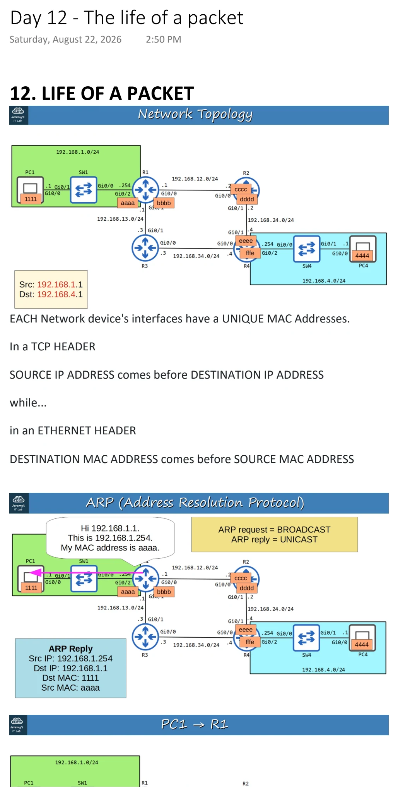
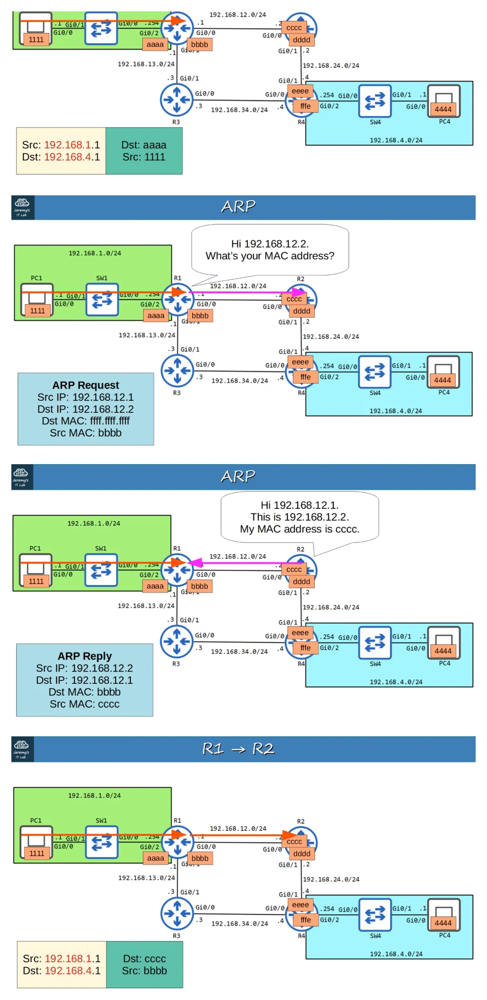
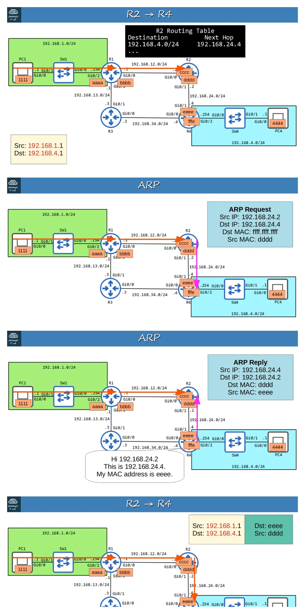
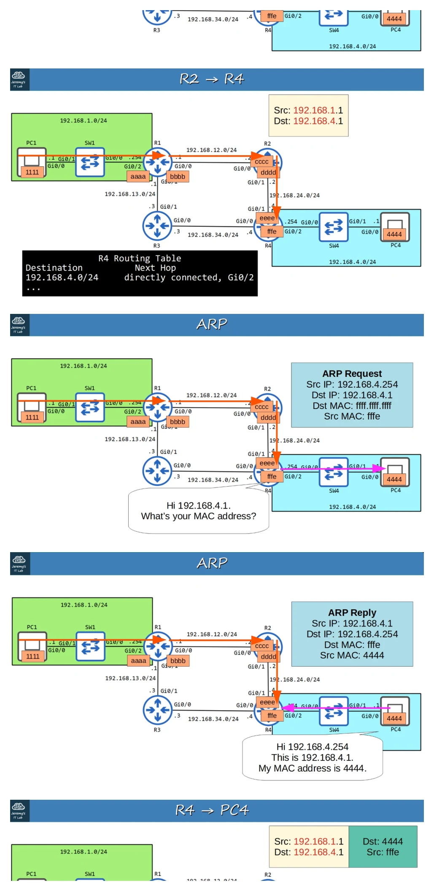
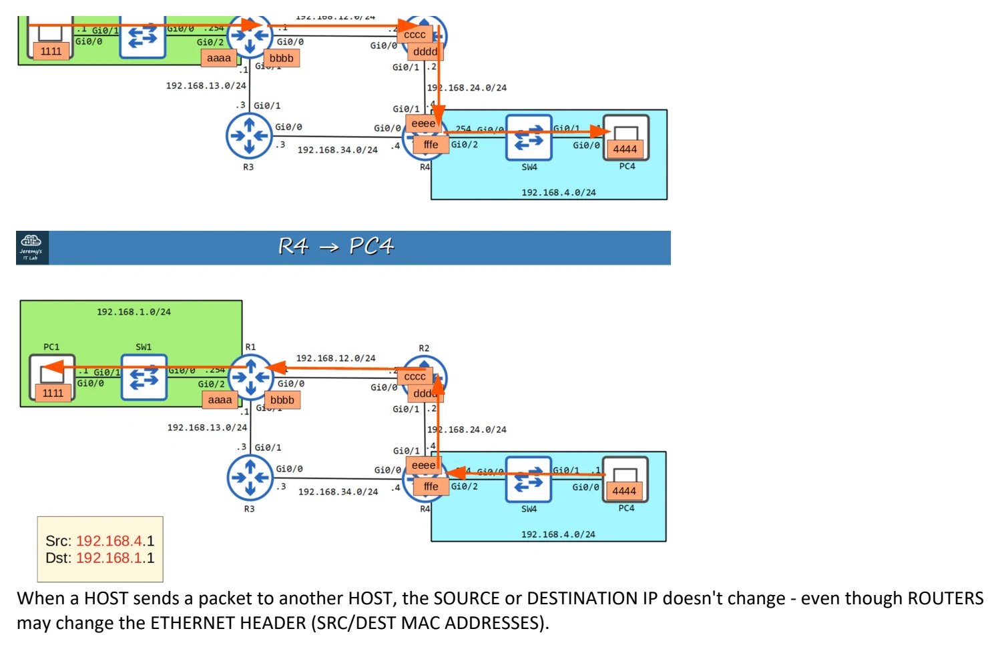

The life of a packet
Download original PDF




Text view — The life of a packet
Extracted from the original export. Diagrams and some formatting appear in the notes above.
Day 12 - The life of a packet Saturday, August 22, 2026 2:50 PM 12. LIFE OF A PACKET EACH Network device's interfaces have a UNIQUE MAC Addresses. In a TCP HEADER SOURCE IP ADDRESS comes before DESTINATION IP ADDRESS while... in an ETHERNET HEADER DESTINATION MAC ADDRESS comes before SOURCE MAC ADDRESS When a HOST sends a packet to another HOST, the SOURCE or DESTINATION IP doesn't change - even though ROUTERS may change the ETHERNET HEADER (SRC/DEST MAC ADDRESSES). Day 12 - The life of a packet Saturday, August 22, 2026 2:50 PM 12. LIFE OF A PACKET EACH Network device's interfaces have a UNIQUE MAC Addresses. In a TCP HEADER SOURCE IP ADDRESS comes before DESTINATION IP ADDRESS while... in an ETHERNET HEADER DESTINATION MAC ADDRESS comes before SOURCE MAC ADDRESS When a HOST sends a packet to another HOST, the SOURCE or DESTINATION IP doesn't change - even though ROUTERS may change the ETHERNET HEADER (SRC/DEST MAC ADDRESSES). Day 12 - The life of a packet Saturday, August 22, 2026 2:50 PM 12. LIFE OF A PACKET EACH Network device's interfaces have a UNIQUE MAC Addresses. In a TCP HEADER SOURCE IP ADDRESS comes before DESTINATION IP ADDRESS while... in an ETHERNET HEADER DESTINATION MAC ADDRESS comes before SOURCE MAC ADDRESS When a HOST sends a packet to another HOST, the SOURCE or DESTINATION IP doesn't change - even though ROUTERS may change the ETHERNET HEADER (SRC/DEST MAC ADDRESSES). Day 12 - The life of a packet Saturday, August 22, 2026 2:50 PM 12. LIFE OF A PACKET EACH Network device's interfaces have a UNIQUE MAC Addresses. In a TCP HEADER SOURCE IP ADDRESS comes before DESTINATION IP ADDRESS while... in an ETHERNET HEADER DESTINATION MAC ADDRESS comes before SOURCE MAC ADDRESS When a HOST sends a packet to another HOST, the SOURCE or DESTINATION IP doesn't change - even though ROUTERS may change the ETHERNET HEADER (SRC/DEST MAC ADDRESSES). Day 12 - The life of a packet Saturday, August 22, 2026 2:50 PM 12. LIFE OF A PACKET EACH Network device's interfaces have a UNIQUE MAC Addresses. In a TCP HEADER SOURCE IP ADDRESS comes before DESTINATION IP ADDRESS while... in an ETHERNET HEADER DESTINATION MAC ADDRESS comes before SOURCE MAC ADDRESS When a HOST sends a packet to another HOST, the SOURCE or DESTINATION IP doesn't change - even though ROUTERS may change the ETHERNET HEADER (SRC/DEST MAC ADDRESSES).